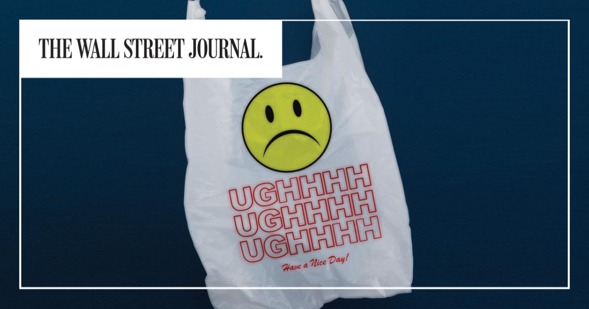

01
【大変身】クラシル驚きの「稼ぎ方」が学びの宝庫だった
発行日時：2026年9月14日 05:30 JST ・ NewsPicks編集部
あなたに関係ありそうな理由
既存の生活者接点を、広告だけで終わらせず、買い物の成果を測れる事業へつなげる方法を考える材料になるためです。
概要
記事は、レシピ動画サービス「クラシル」を運営するdelyが、広告中心のメディア企業から、メーカーと小売の購買支援へ事業の軸を広げている過程を追う。2026年3月期の売上高は170億円、営業利益は35億円となり、ともに前年から約3割伸びた。成長の中心に置かれるのが、レシートを撮影してポイントを得る「レシチャレ」だ。利用者が対象商品を買い、レシートを送ることで、メーカーは販促施策の反応を確かめやすくなり、小売は来店や購買のきっかけをつくれる。記事によれば、レシチャレのレシート枚数は月8500枚から25万枚へ増え、対象商品を買った利用者の購買量が施策前より280％伸びた例もある。動画の視聴時間を増やすことだけを目的にせず、日常の買い物という行動までつなげた点が特徴だ。delyは2023年にレシート買取アプリを取得し、ポイント事業を育ててきた。レシチャレでは商品数を多く並べるだけでなく、小売各社との連携を築き、利用者が買える場所を示す。記事は、2027年度には購買事業がメディア事業を上回る見通しも伝える。一方、表示コメントでは、小売側がどのデータを受け取り、値引きや販促の負担をどう分けるのかをもっと知りたいという指摘があった。利用者が得をするだけでは、取引先の継続的な参加にはつながらない。事業転換を評価する際は、会員数やポイント発行額だけでなく、メーカー、小売、生活者それぞれに再現可能な成果が残るかを見る必要がある。記事後半では、販売条件を管理するAIの取り組みにも触れる。既存の取引関係と現場データを土台に、手作業を減らせるかまで含めて、次の収益源をつくろうとしている。つまり、動画コンテンツを入り口にして、購買の前後で何が起きたかを測れる仕組みへ移ろうとしている。メーカーにとっては広告の到達だけでなく、店頭での反応を見やすくなる可能性があり、小売にとっては販促を実施した後の検証に使える余地がある。利用者のポイント体験、取引先の収益性、データの扱いを一緒に磨けるかが、成長の持続性を決める。広告の閲覧数と実際の購買を混同せず、施策ごとの効果を確かめ続けられるかが試される。
広告の閲覧数と実際の購買を混同せず、施策ごとの効果を確かめ続けられるかが試される。その検証を続けたい。
仕事や会話で使える一言
「新規事業は、飛び地に見えても既存の取引関係と測定可能な成果をつなげられるかで見たいです。」
NewsPicks原文を読む
02
【攻める銀行】りそな、OLTAと狙う「社長のスマホ」
発行日時：2026年9月14日 05:30 JST ・ NewsPicks編集部
あなたに関係ありそうな理由
商品を増やすより、資金が不足しそうな瞬間に事業者が見る画面を誰が持つか、という金融サービスの競争を考えられるためです。
概要
記事は、りそなホールディングスがファクタリングのOLTAへ出資し、中小企業の資金繰り支援を銀行アプリへ近づけようとする構想を伝える。りそなは第三者割当増資と既存株式の取得を合わせて約30億円を投じ、OLTAの約20％を取得する方向だという。OLTAは、売掛債権を買い取って早期に現金化するファクタリングを提供する。融資とは異なり負債として計上されない一方、資金化の速さと引き換えに手数料がかかるため、低い利益率の事業者が安易に頼れば負担になる可能性もある。記事では、OLTAが金融機関向けのOEMサービスを通じて48機関に導入されており、りそなグループの4銀行が加われば導入先が50を超える見通しと説明する。りそなは自前での開発も試したが、資金化の判断や運用を内製だけで賄う難しさを認識し、出資と連携を選んだ。狙いは、社長が日々確認する口座残高、入出金、請求書、資金繰りの情報を一つの画面につなぐことにある。記事によると、りそなの法人向けアプリは日常的な利用者が8割を超え、将来は資金が足りなくなりそうな局面でファクタリングを選択肢として示せる可能性がある。表示コメントには、請求・資金繰り・調達を見渡す「CFOの画面」を誰が押さえるかが金融の主導権を左右するという意見があった。他方で、便利な提案が資金繰りの悪化を先送りするだけにならないかという懸念も重要だ。利用者の行動データを増やす設計と、手数料、返済余力、事業の改善を支える設計を分けて評価したい。銀行、フィンテック、会計ソフトの境界が薄くなる中で、サービスの入口を持つことが競争になるニュースである。アプリが融資や資金化を勧めるなら、事業者が選ぶ理由、費用、代替案を理解できることも欠かせない。日々の口座情報から課題を早く察知できる利点と、短期の資金化を繰り返させない支援は両立させる必要がある。連携の成否は、技術の接続だけでなく、資金繰りが苦しい顧客に対してどんな選択肢を示せるかで測られる。支援を受ける側が、後から条件を比べ直せる透明性も確保したい。
資金化の速さだけでなく、事業の改善につながる支援かを定期的に見極める視点が、いっそう大切だ。
仕事や会話で使える一言
「商品を増やすより、資金が足りなくなる瞬間に自然に届く画面を誰が持つかが重要ですね。」
NewsPicks原文を読む
03
【悲痛】中国のタイムラインは「絶望」で埋まっている
発行日時：2026年9月14日 05:30 JST ・ The New York Times
あなたに関係ありそうな理由
景気の数字だけでは捉えにくい、若い世代が将来設計をどこまで描けているかという社会の温度を読む材料になるためです。
概要
記事は、中国の短文投稿や動画共有サービスで、就職難、住宅市場の悪化、先行きへの不安を映す悲観的な表現が広がっている状況を伝える。路上生活を生き抜く方法を扱う動画が大きく視聴されたことや、冗談、愚痴、遠回しな言い回しを通じて、若者が不安を共有する様子が紹介される。公式統計では2026年7月の若年失業率は17.9％とされ、柔軟な就労形態に入る人も2億人を超えるという。もちろん、失業率や投稿の量だけで、社会全体の気分を断定することはできない。記事が描くのは、技術投資や成長産業の明るい話と、個人が仕事、住居、結婚や家族形成の見通しを持ちにくい感覚が同時に存在することだ。景気の減速や不動産価格の下落が続く中で、職を得ても安定を実感しにくい人がいる。批判的な表現が制限されやすい環境では、政治を直接論じない生活の話題や皮肉が、かえって共有されやすい。記事は、こうした投稿が個人の不満を超え、公式の楽観的な語りとは異なる物語を形づくる可能性を示す。表示コメントにも、中国、欧州、米国、日本の若年失業率を単純に横並びで比べることへの注意と、統計の外にある労働の不安定さを見るべきだという声があった。SNSは世論の全体像ではないが、平均値が見落とす摩擦を拾う補助線にはなる。企業や行政が成長率、投資額、就業者数だけを見れば、若い世代が何を諦め、何に支出や挑戦をためらっているかを見失う。教育、地域、雇用の支援を考える際は、単に仕事を増やすだけでなく、次の一年を計画できる安心につながるかを問いたい。見えにくい悲観を過剰に恐れるのではなく、対話できる場と情報の確かめ方を増やすことが重要になる。投稿の一部を社会全体の答えにしないためにも、地域、学歴、雇用形態ごとの差を確かめ、若者自身の声を聞く経路を増やしたい。成長の果実がどの層に届くのか、失敗してもやり直せる制度があるのかを問うことは、景況感を読む以上に重要だ。雇用の量だけでなく、収入の予測可能性や移動のしやすさにも目を向けたい。
仕事を得た後に生活が安定するかまで見なければ、雇用の質は分からない。若者が移動や再挑戦を選べる安全網を厚くする議論も欠かせない。
仕事や会話で使える一言
「景気の数字だけでなく、若年層が将来設計を諦め始めていないかを見る必要があります。」
NewsPicks原文を読む
04
日銀が植田体制で最速利上げへ、目標軟着陸目指し難易度増すかじ取り
発行日時：2026年9月14日 10:30 JST ・ Bloomberg
あなたに関係ありそうな理由
利上げの有無だけでなく、資金調達、価格、住宅ローン、為替にどの順で影響するかを分けて考えられるためです。
概要
記事は、日銀が9月17日と18日の金融政策決定会合で政策金利を0.25ポイント引き上げ、1.25％程度にするとの見方を伝える。実現すれば植田体制では3回目の利上げとなり、政策金利は1995年以来の水準になる。エコノミスト52人への調査では全員が今回の利上げを予想した一方、次の利上げを12月と見るか、翌年1月と見るかでは見方が分かれた。記事が示す中立金利の推計レンジは1.1％から2.5％で、1.25％はその範囲に入る。したがって、金利を上げれば直ちに金融が厳格になるというより、物価と景気を見ながら緩和的な状態をどの程度戻すかを慎重に判断する局面と読める。貸出は前年比でなお約5％増えており、長期固定の借入が多い場合には、金利変動の影響が実体経済に表れるまで時間がかかる。反対に、変動型の住宅ローン、短期借入、借り換えを控える企業には早く影響が及び得る。日銀が注目するのは、賃金とサービス価格、物価の持続性、需要の強さ、為替や海外経済の変動だ。石油価格や円安の影響で物価が上がっている場合と、内需や賃上げで上がっている場合では、同じ物価上昇でも対応は異なる。表示コメントでは、コア物価が目標を上回る状況を重く見る意見と、金利差や通貨政策を巡る海外からの圧力、家計負担への懸念が並んだ。金利ニュースを読む際は、会合で上げるかどうかに加え、当局が次に何の指標を確認するのか、自分の借入や預金に何か月後から影響するのかを分けて見たい。資金計画では一つの予想に賭けず、上がった場合と見送られた場合の両方を用意しておくことが現実的である。企業では借入の固定・変動比率、借り換えの時期、価格転嫁の余地を並べ、家計では返済額と預金金利の変化を別々に確認したい。金利の変化は一様ではなく、立場によって追うべき数字が異なる。市場の一日の反応だけでなく、会合後の説明と次のデータを続けて見ることで、短期の見出しに振り回されにくくなる。金利の水準とその変化の速度を区別して見ることも、判断を急がない助けになる。
効果が出る時差を考えながら、家計と企業の負担を個別に点検する必要がある。必要な数字を選ぶことも、判断を誤らないために重要になる。
仕事や会話で使える一言
「利上げの有無より、資金調達・価格・住宅ローンにどの順で効くかを分けて見たいです。」
NewsPicks原文を読む
05
米経済に対する国民の「本音」 6つのチャートで読む
発行日時：2026年9月14日 05:20 JST ・ The Wall Street Journal

あなたに関係ありそうな理由
平均値が堅調でも生活者の実感が弱い時、何を測れておらず、誰に負担が残っているかを見直す材料になるためです。
概要
記事は、米国の雇用や経済成長の主要指標が比較的堅調なのに、生活者の景況感が弱い理由を六つのチャートで考える。先月の就業者数は16万2000人増え、過去一年のGDP成長率は2.1％、7月の消費者物価は前年同月比3.4％上昇だった。失業率は低く、株式市場やAI投資の恩恵もある。それでも調査では45％が景気を「悪い」と感じ、「良い」「非常に良い」を合わせた19％を大きく上回る。記事は、このずれを人々が数字を誤解しているからだと片付けない。コロナ前と比べた消費者物価は28％高く、物価の上昇率がピークを過ぎても、上がった水準そのものは家計に残る。住宅ローンの30年固定金利は2020年1月の3.51％から6.71％まで上昇し、中央値価格の住宅を購入するために必要な年収も家計所得の中央値を大きく上回ると紹介される。しかも、住宅の購入費、住宅ローン金利、クレジットカードや自動車ローンの金利は、消費者物価の計算に直接は入りにくい。平均の実質賃金がコロナ前より2.8％増えていても、2020年末から昨年末までに34％の労働者は賃金上昇がインフレに追い付かなかったという研究も示される。表示コメントでは、景気指標は平均の世界を語る一方、生活者は中央値の世界で生きているという指摘があった。ここで必要なのは、公式統計を否定することではなく、統計が測る対象と家計が支払うものの違いを確認することだ。企業の業績や地域の景気を読む時も、平均給与、顧客数、成長率だけでなく、負担が集中している層、住居や借入の条件、累積した物価上昇を見たい。数字と実感がずれた時、実感を非合理と決めつけず、何を測定から外しているのかを問い直す姿勢が判断の精度を高める。例えば、賃金が上がっていても転職で得た上昇分が物価や金利で消えれば、生活の余裕は増えたと感じにくい。統計を使う側は、平均、中央値、累積変化、地域や所得層ごとの差を並べ、異なる結論がなぜ出るかを説明する必要がある。経済の説明が実感に届くかは、指標の定義を開示できるかにも左右される。
数字の読み方を更新することが、政策や企業の説明への納得感を高めるはずだ。日々の判断で必要な姿勢だ。
仕事や会話で使える一言
「景気は平均で語られても、生活者は中央値で暮らしているのかもしれません。」
NewsPicks原文を読む